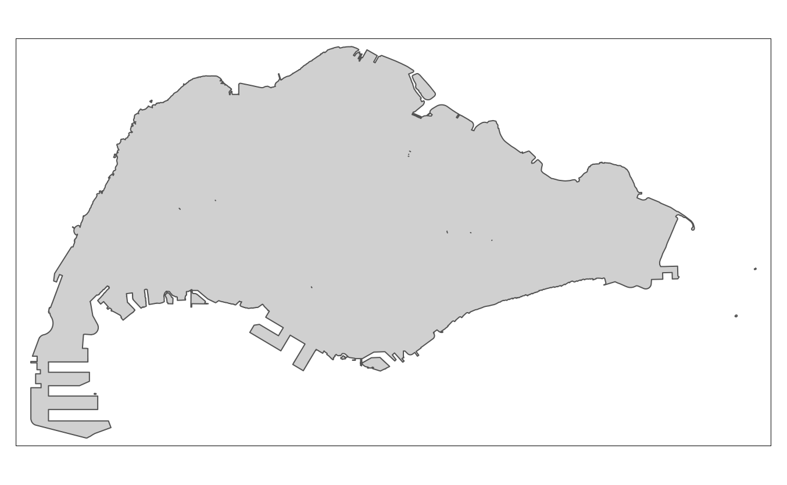
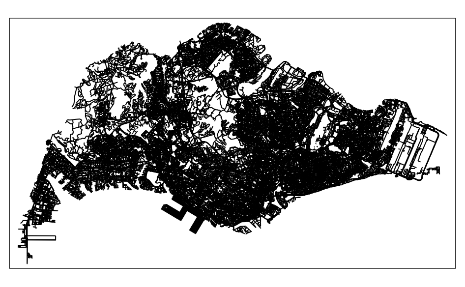
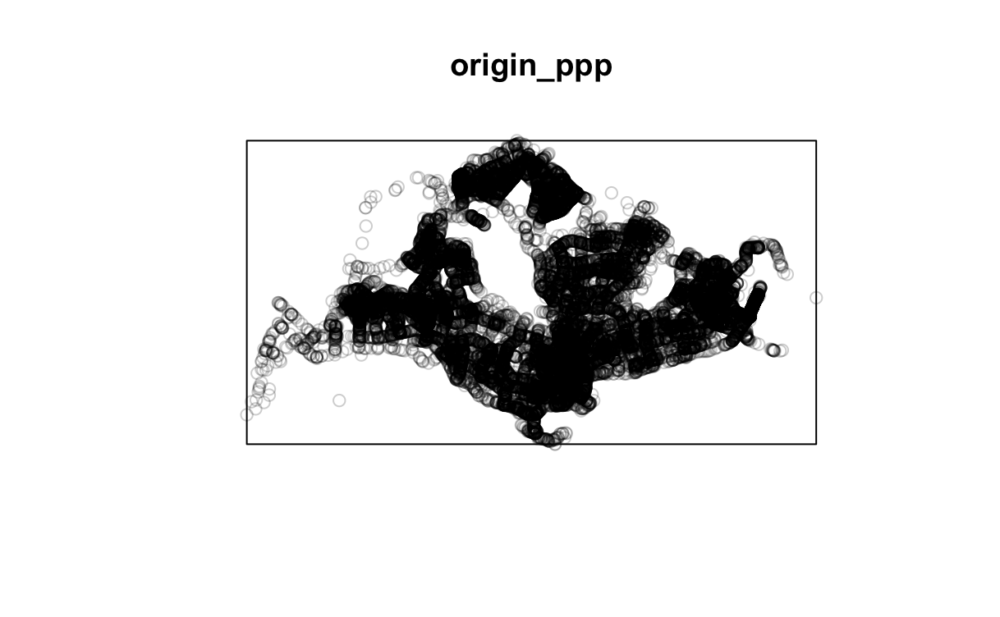
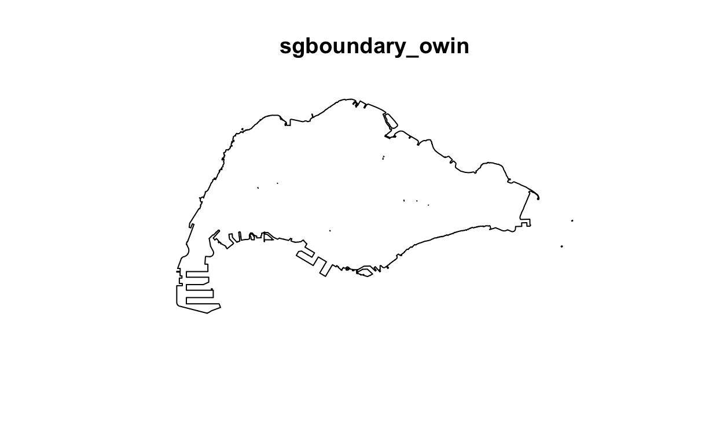
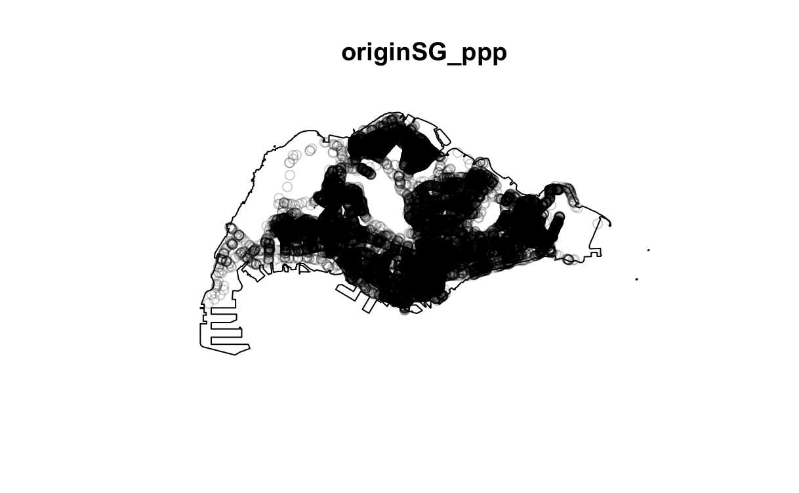
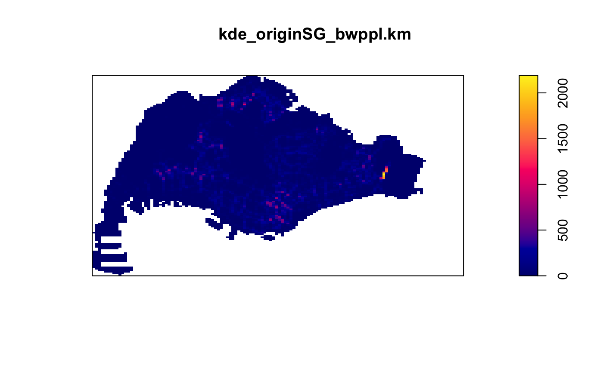
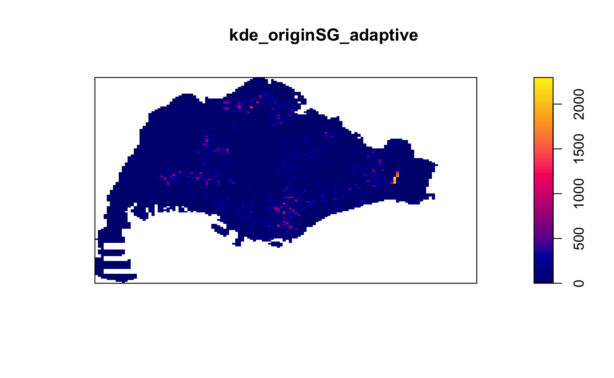
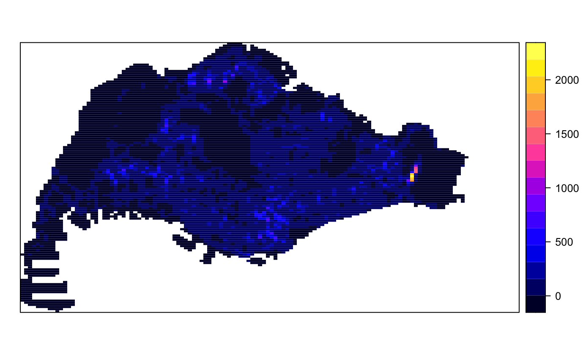

pacman::p_load(tidyverse, sf, spatstat, raster, maptools, tmap, arrow, spNetwork, classInt, lubridate, ggplot2)Take-home Exercise 1: Application of Spatial Point Patterns Analysis to discover the geographical distribution of Grab hailing services in Singapore
1 Overview
1.1 Background
Human mobility, the movement of human beings in space and time, reflects the spatial-temporal characteristics of human behavior. With the advancement Information and Communication Technologies (ICT) especially in smartphones, a large volume of data related to human mobility have been collected. By using appropriate GIS analysis methods, these data are potentially useful in supporting smart city planning and management.
In 2020, a very interesting human mobility data set called Grab Posisi was released by GRAB, one of the largest shared taxi operator in South-east Asia. This provides an opportunity for us to explore the geographical and spatio-temporal distribution of Grab hailing services locations in Singapore.
1.2 Our Objectives
In this exercise, we will be exploring the geographical and spatio-network distribution of Grab hailing services locations in Singapore with the use of spatial point patterns analysis techniques.
1.3 Our Task
Use appropriate functions of sf and tidyverse to prepare the following geospatial data layer in sf tibble data.frames:
Grab taxi location points either by origins or destinations.
Road layer within Singapore excluding outer islands.
Singapore boundary layer excluding outer islands
Use the extracted data to derive traditional Kernel Density Estimation layers.
Use the extracted data to derive either Network Kernel Density Estimation (NKDE) or Temporal Network Kernel Density Estimation (TNKDE)
Use appropriate tmap functions to display the kernel density layers on openstreetmap of Singapore.
Describe the spatial patterns revealed by the kernel density maps.
1.4 Data Acquisition
To address the above questions, we would be using the following data sets:
| Type | Content | Source |
|---|---|---|
| Geospatial | Road data set of Malaysia, Singapore and Brunei | OpenStreetMap of Geofabrik download server |
| Geospatial | Master Plan 2019 Subzone Boundary (No Sea) | data.gov.sg |
| Aspatial | Grab-Posisi of Singapore | engineering.grab.com |
1.5 Install and Load R Packages
In this exercise, the following R packages will be used:
tidyverse: to read, manipulate and create tidy data, and to create data graphics
sf: to provide simple features access to represent and work with spatial vector data such as points and polygons
spatstat: to perform statistical analysis of spatial data
raster: to read, write, manipulate, analyze and model spatial data
maptools: tools for handling spatial objects
tmap: to create thematic and high-quality cartographic maps
arrow: improve the performance of data analysis methods, and to increase the efficiency of moving data from one system or programming language to another
spNetwork: to perform Spatial Point Patterns Analysis such as kernel density estimation (KDE) and K-function on network. It also can be used to build spatial matrices (‘listw’ objects like in ‘spdep’ package) to conduct any kind of traditional spatial analysis with spatial weights based on reticular distances.
classInt: provides a uniform interface to finding class intervals for continuous numerical variables
lubridate: to parse and manipulate dates
ggplot2: to create data visualizations
To install and load the packages, we will use p_load() from the pacman package:
2 Data Preparation (Geospatial)
Let’s begin getting our hands dirty by introducing and preparing the geospatial data sets in R!
2.1 Data Import
To import geospatial data, we will be using st_read() from the sf package.
Road data set from OSM (shapefile format):
roaddata_sf <- st_read(dsn = "data/geospatial",
layer = "gis_osm_roads_free_1")Master Plan 2019 Subzone Boundary (No Sea) (geojson format):
mpsz_sf <- st_read("data/geospatial/MasterPlan2019SubzoneBoundaryNoSeaGEOJSON.geojson")2.2 Data Preparation
It is important to ensure our geospatial data is clean, in the correct coordinate reference system (CRS) and extracted to contain only relevant data to prevent complications later on.
In this section, we will go through the procedures to prepare our geospatial data.
2.2.1 Data Pre-Processing
To begin with, let’s examine the data sets to understand their features.
roaddata_sfFrom the above, we can see that roaddata_sf is an sf object, with linestring geometry type and dimension XY.
We also notice that it is in WGS84 geodetic CRS, which is not our desired coordinate reference system (svy 21). Hence, we would have to reproject it later (Section 2.2.2).
mpsz_sfFor mpsz_sf, we see that it is an sf object with multipolygon geometry type. It comprises of records with XYZ coordinates, indicating a Z-dimension, quite redundant to us.
Here, we notice that mpsz_sf has geodetic CRS of WGS84 as well. Hence, we will need to fix the CRS for mpsz_sf later (Section 2.2.2) as well.
2.2.1.1 Dropping Z-dimension
After having an understanding of our data sets, we will start to modify them into our desired dimensions and systems.
In this step, we will remove the Z-dimension in mpsz_sf, with the use of st_zm(). st_zm() is a function used to drop or add Z and/or M dimensions, from sf package.
mpsz_sf <- st_zm(mpsz_sf)mpsz_sfWith that, we can see that the mpsz_sf has become two-dimensional (XY).
2.2.1.2 Invalid Geometries
To check whether our data sets contain invalid geometries, we can apply the following code chunks:
length(which(st_is_valid(roaddata_sf) == FALSE))length(which(st_is_valid(mpsz_sf) == FALSE))We see that roaddata_sf has no invalid geometry, while mpsz_sf has 6 invalid geometries.
To correct the invalid geometries in mpsz_sf, we can use st_make_valid() from sf package,
mpsz_sf <- st_make_valid(mpsz_sf)and check confirm whether the modified mpsz_sf data set now contains fully valid geometries.
length(which(st_is_valid(mpsz_sf) == FALSE))Great! Our geographic data are now cleared of invalid geometries.
2.2.1.3 Handling Missing Values
Next, we will check for missing values in our geographic data.
Let’s begin with checking roaddata_sf, we can applying the following code chunk.
roaddata_sf[rowSums(is.na(roaddata_sf)) != 0, ]Wow, there is an absurd 1719007 records with missing values?!
We can investigate what could be wrong using View(roaddata_sf) (not shown here).
From the result of View(), it seems like it is the “ref” field comprises of many missing values! Let’s try removing it, and check again!
roaddata_sf <- roaddata_sf %>% dplyr::select(-ref) roaddata_sf[rowSums(is.na(roaddata_sf)) != 0, ]From the code above, which I did not display the result, it would appear that there are still a lot of missing values, particularly in the “name” field. However, we should not delete those records because they are not necessarily redundant: in Singapore, if a road length is less than 60m, it need not be named. Thus, these records might still represent valid roads that are shorter than 60m!
Then, ignoring the missing values in “name” field, let’s check whether there are missing values in the other fields.
roaddata_sf[rowSums(is.na(roaddata_sf %>% dplyr::select(-name))) != 0, ]Phew, finally! There are no missing values in other fields. Seems like roaddata_sf is cleared of missing values that requires our attention.
Next, let’s check mpsz_sf!
mpsz_sf[rowSums(is.na(mpsz_sf)) != 0, ]Thankfully, there’s no missing values in mpsz_sf!
Hurray, we’re done with resolving the missing values!
2.2.2 Verifying and Transforming CRS
To check the CRS of the data sets, we can use st_crs() from sf package.
st_crs(roaddata_sf)st_crs(mpsz_sf)From the above codes, and as also noticed earlier in Section 2.2.1, we would see that the data sets are in the WGS84 CRS. However, in Singapore, we should use the SVY21 CRS (with EPSG code: 3414) as it is more appropriate for our analysis.
To change the CRS of the data sets, we can use st_transform() from sf package, inputting the EPSG code for SVY21 (3414) as the second argument of the function.
roaddata_sf <- st_transform(roaddata_sf, 3414)mpsz_sf <- st_transform(mpsz_sf, 3414)Then, let’s confirm that the CRS for the data sets have been correctly modified.
st_crs(roaddata_sf)st_crs(mpsz_sf)Hooray! Our geospatial data are now in the correct CRS!
2.2.3 Extraction of relevant data
After doing some cleaning of our geospatial data, let’s roughly visualize how they look like:
tmap_mode("plot")
tm_shape(roaddata_sf) +
tm_lines()
As expected, roaddata_sf contains the visualization of Malaysia, Singapore and Brunei.
tm_shape(mpsz_sf) +
tm_polygons()
And for mpsz_sf, since it is supposed to contain data of Singapore’s territories, the visualization displays the map as such.
However, in this exercise, we are interested in the data that includes only Singapore without its outer islands, we will have to remove all outer islands outside of Singapore mainland. Hence, we need to do some manipulation to remove the outer islands.
To begin with, we will remove the outer islands from mpsz_sf first using str_detect() from the stringr package and filter() from the dplyr package, and name the new data frame mpsz_sgsf
mpsz_sgsf <- mpsz_sf %>% filter(!str_detect(Description, "ISLAND"))Then, to resolve internal boundaries,
sgboundary_sf <- mpsz_sgsf %>% st_unionsgboundary_sfLet’s make a quick plot using qtm() from the tmap package to check if we’ve successfully extracted data of Singapore’s boundary layer excluding outer islands:
tmap_mode("plot")
qtm(sgboundary_sf)=
Yay! We’ve gotten the Singapore boundary layer that excludes the outer islands!
Next, to derive the road layers that lie within Singapore, we can use st_contains() from the sf package. Here, we shall form a new data set road_sf which should contain geospatial data with road layers within Singapore, without its outer islands.
road_sf <- roaddata_sf[st_contains(sgboundary_sf, roaddata_sf, sparse = FALSE),]Let’s break down the code above:
The first argument of st_contains() is the boundary which we want our result data to contain, and the second argument is the road data that we want to extract.
Then, with sparse = FALSE, we ensure a complete containment check for each feature.
However, it is good to note that this option could result potentially longer running time for large datasets.
Then, we use the square brackets to extract the data for which st_contains is TRUE, that is, road networks that fall within the Singapore boundary.
Now, let’s check that roadsg_sf contains the road layer only within Singapore by plotting a map!
qtm(road_sf)
True enough, this should be how the road system of Singapore, without its outer islands, looks like. YAY!
3 Data Preparation (Aspatial)
Now, it’s time to introduce our aspatial data set!
3.1 Importing Aspatial Data
To import aspatial data, we will be using read_parquet() from arrow package.
grabposisi0 <- read_parquet("data/aspatial/part-00000-8bbff892-97d2-4011-9961-703e38972569.c000.snappy.parquet")
grabposisi1 <- read_parquet("data/aspatial/part-00001-8bbff892-97d2-4011-9961-703e38972569.c000.snappy.parquet")
grabposisi2 <- read_parquet("data/aspatial/part-00002-8bbff892-97d2-4011-9961-703e38972569.c000.snappy.parquet")
grabposisi3 <- read_parquet("data/aspatial/part-00003-8bbff892-97d2-4011-9961-703e38972569.c000.snappy.parquet")
grabposisi4 <- read_parquet("data/aspatial/part-00004-8bbff892-97d2-4011-9961-703e38972569.c000.snappy.parquet")
grabposisi5 <- read_parquet("data/aspatial/part-00005-8bbff892-97d2-4011-9961-703e38972569.c000.snappy.parquet")
grabposisi6 <- read_parquet("data/aspatial/part-00006-8bbff892-97d2-4011-9961-703e38972569.c000.snappy.parquet")
grabposisi7 <- read_parquet("data/aspatial/part-00007-8bbff892-97d2-4011-9961-703e38972569.c000.snappy.parquet")
grabposisi8 <- read_parquet("data/aspatial/part-00008-8bbff892-97d2-4011-9961-703e38972569.c000.snappy.parquet")
grabposisi9 <- read_parquet("data/aspatial/part-00009-8bbff892-97d2-4011-9961-703e38972569.c000.snappy.parquet")To combine all of them into one single data frame named grabposisi, we can use rbind().
grabposisi <- rbind(grabposisi0, grabposisi1, grabposisi2, grabposisi3, grabposisi4, grabposisi5, grabposisi6, grabposisi7, grabposisi8, grabposisi9)Tadah! Our grabposisi data sets are consolidated and ready for further preparation.
grab## 3.1 Data Preparation
Next, let’s examine our new consolidated grabposisi data set.
glimpse(grabposisi)3.1.1 Changing Data Types
From running the code above, we would see that the pingtimestamp field is in the integer format, when it is supposed to be a datetime type of data. To convert it into datetime format, we can use the following code:
grabposisi$pingtimestamp <- as_datetime(grabposisi$pingtimestamp)Now, it is in a more appropriate for interpretation and manipulation later!
3.1.2 Conversion into sf tibble data frame
Next, we will use the code below to convert the grabposisi data into sf tibble data frame. Since the data we are drawing the geometry from are in longitude (rawlat field) and latitude (rawlng field) (i.e. WGS84; EPSG = 4326) format, we have to use EPSG: 4326 to retrieve the data.
grabposisi_sf <- st_as_sf(grabposisi, coords = c("rawlng", "rawlat"), crs = 4326) To check our transformed data frame, we apply the code below:
grabposisi_sf3.1.3 Verifying and Transforming CRS
Before we proceed further, let’s reproject our grabposisi_sf into our desired svy21 projection system (EPSG:3414) using st_transform().
grabposisi_sf <- grabposisi_sf %>% st_transform(3414)st_crs(grabposisi_sf)It’s now in svy21 projection system, we’re good to move on!
3.1.4 Extracting Study Data
Considering the fact that we are only interested in the Grab taxi location points by origins in this study, we can apply the following code:
origin_grab_sf <- grabposisi_sf %>%
group_by(trj_id) %>%
arrange(pingtimestamp) %>%
filter(row_number() == 1) %>%
mutate(weekday = wday(pingtimestamp,
label = TRUE,
abbr = TRUE),
start_hr = factor(hour(pingtimestamp)),
day = factor(mday(pingtimestamp)))The code might look a bit complicating, but let’s go through this step by step through the pipelines:
Firstly, we use group_by() from dplyr to group the records according to trajectory IDs, so that records of the same journey are together.
Then, we use arrange() from dplyr to arrange the records according to time in ascending order. With that, the first record of each group would be the earliest record of the journey, inferring that it is the origin point.
Next, we use filter() from dplyr to filter each group, keeping only their first row. This allows us to keep only the records relating to the origin points of each journey.
Lastly, we use mutate() from dplyr, along with wday(), hour() and mday() from lubridate to retrieve the weekdays, start_hr, and day of the week to support our analysis later.
Tadah! We have successfully extracted the Grab taxi location points by origin.
Next, we should check again whether it is in the correct CRS.
st_crs(origin_grab_sf)It appears to be right! Let’s have a glimpse of the result origin_grab_sf data set before we move on.
glimpse(origin_grab_sf)4 Exploratory Data Analysis (EDA) and Choropleth Mapping
In this section, we will conduct some EDA on our aspatial data to gain some rough insights to lead us into
Let’s have a look at how our combined data looks like!
Some questions we might be curious about are: - Which are the peak days of the week to take a Grab ride? - When are the peak times throughout the day to hitch a Grab ride? - Where do many of the Grab rides begin? Are they evenly distributed across Singapore? - If so, when are the peak times and days wh
4.1 Days of the Week
To look at the peak days, we can plot a bar chart using ggplot2.
ggplot(origin_grab_sf) +
geom_bar(aes(x=weekday))
At a glance, we see that the number of grab rides taken across different days do not appear drastically different.
4.2 Peak Times
To plot the number of rides across different timings of the day, we can use the following code:
hours_of_day <- 0:23
origin_grab_sf$start_hr <- factor(origin_grab_sf$start_hr, levels = hours_of_day)
ggplot(origin_grab_sf, aes(x = start_hr)) +
geom_bar(stat = "count") +
labs(x = "Start Hour", y = "Count of Rides") +
scale_x_discrete(limits = hours_of_day) 
It appears that past 12am, and around 10am to 11am are the peak periods of ride hailing services! This could be due to most public buses and trains not operating past midnight, resulting in a higher demand for the most popular alternative in Singapore: Grab ride services. Also, rides could be peaking around 10am and 11am as people are travelling to work.
4.3 Mapping the geospatial data sets
Next, it is also useful for us to create a pin map to show the spatial patterns of our data.
tmap_mode("plot")
tm_shape(sgboundary_sf) + tm_polygons() +
tm_shape(roadsg_sf) + tm_lines() +
tm_shape(origin_grab_sf) + tm_dots()In this exercise, we use static mode with “plot” argument in tmap_mode() to ease the process of uploading this exercise.
However, we can choose to use “view” argument instead if we want to navigate and zoom around the map freely. Using “view”, we can also query the information of each simple feature (i.e the point) by clicking on it.
5 First-order Spatial Point Patterns Analysis (SPPA)
5.1 Geospatial Data Wrangling for Traditional Kernel Density Estimate (KDE)
To conduct first-order spatial point analysis on our data, we will be using the spatstat package. However, the spatstat package requires our data to be in sp’s Spatial classes. In this section, we will convert the sf data frames to sp’s Spatial class, then to Spatial objects, and finally ppp and owin for our analysis.
5.1.1 Converting sf data frames to sp’s Spatial class
To do so, we would use as_Spatial() from the sf package to convert our three geospatial data from sf data frame to sp’s Spatial class.
sgboundary <- as_Spatial(sgboundary_sf)origin<- as_Spatial(origin_grab_sf)5.1.2 Converting the Spatial class into generic sp format
spatstat requires the analytical data to be in ppp object form. However, as there is no direct method to convert Spatial classes into ppp objects, we would have to convert the Spatial classes into Spatial objects first.
sgboundary_sp <- as(sgboundary, "SpatialPolygons")origin_sp <- as(origin, "SpatialPoints")5.1.3 Converting the generic sp format into spatstat’s ppp format
origin_ppp <- as(origin_sp, "ppp")Here, we can plot origin_ppp to examine the difference.
plot(origin_ppp)
For a quick understanding of the summary statistics of the newly created ppp object, we can apply the summary() from base R.
summary(origin_ppp)5.1.4 Handling duplicated points
We can check for duplication in a ppp object using the following code chunk:
any(duplicated(origin_ppp))Yay, we have no duplicate points, so we don’t have to do anything here.
5.1.5 Creating owin object
When analyzing spatial potterns, it is good practice to confine our analysis within a geograhical area. In spatstat, an object called owin is designed to represent this polygonal region.
The following code chunk is used to convert sgboundary_sf into owin object of spatstat.
sgboundary_owin <- as.owin(sgboundary_sf)The output object can be displayed by using the plot() function,
plot(sgboundary_owin)
and summary() function of BaseR.
summary(sgboundary_owin)5.1.6 Combining point events object and owin object
In this last step of geospatial data wrangling, we will extract origin locations that are within Singapore using the following code chunk:
originSG_ppp <- origin_ppp[sgboundary_owin]The output object combined both the point and polygon feature in one ppp object class as shown below.
summary(originSG_ppp)To plot the newly derived originSG_ppp map,
plot(originSG_ppp)
5.2 Deriving Traditional Kernel Density Estimation (KDE) Layers
In this section, we will be performing first-order SPPA using the spatstat package. In particular, we will be deriving the kernel density estimation (KDE) layer for visualizing and exploring the intensity of point processes (origin points of Grab rides).
5.2.1 Computing KDE using automatic bandwidth selection method
The code chunk below computed a Kernel Density byy using the following configurations of density() of spatstat.
Automatic bandwidth selection method: bw.ppl() - other methods: bw.CvL(), bw.scott() or bw.diggle()
Smoothing kernel: “gaussian” - other methods: “epanechnikov”, “quartic” or “disc”
The intensity estimate is corrected for edge effect bias by using edge = TRUE.
kde_originSG_bwppl <- density(originSG_ppp,
sigma = bw.ppl,
edge = TRUE,
kernel = "gaussian")Then, we will plot the derived kernel density.
plot(kde_originSG_bwppl)To retrieve the bandwidth used to compute the KDE layer, we use the following code chunk:
bw <- bw.ppl(originSG_ppp)bw5.2.2 Rescaling KDE values
In the following code chunk, rescale() is used to convert the unit of measurement from meter to kilometer.
originSG_ppp.km <- rescale(originSG_ppp, 1000, "km")Now, we can re-run density() using the rescaled data set and plot the output KDE map.
kde_originSG_bwppl.km <- density(originSG_ppp.km,
sigma = bw.ppl,
edge = TRUE,
kernel = "gaussian")plot(kde_originSG_bwppl.km)
Now, we can see that the output image looks identical to the earlier version, but with more interpretable data values in the legend.
5.2.3 Comparing different automatic bandwidth methods
Aside from bw.diggle, as mentioned before, there are three other spatstat functions (bw.CvL(), bw.scott(), bw.ppl()) that can be used to determine the bandwidth automatically.
Let’s take a look at the bandwidth used by each of these automatic bandwidth calculation methods, keeping all our kernel method (“gaussian”) constant!
bw.CvL(originSG_ppp.km)bw.scott(originSG_ppp.km)bw.diggle(originSG_ppp.km)The following code chunk is used to compare the difference in output using the different automatic bandwidth methods.
kde_originSG_bwCvL <- density(originSG_ppp.km,
sigma = bw.CvL,
edge = TRUE,
kernel = "gaussian")
kde_originSG_bwscott <- density(originSG_ppp.km,
sigma = bw.scott,
edge = TRUE,
kernel = "gaussian")
kde_originSG_bwdiggle <- density(originSG_ppp.km,
sigma = bw.diggle,
edge = TRUE,
kernel = "gaussian")par(mfrow = c(2,2))
plot(kde_originSG_bwppl.km, main = "bw.ppl")
plot(kde_originSG_bwCvL, main = "bw.CvL")
plot(kde_originSG_bwscott, main = "bw.scott")
plot(kde_originSG_bwdiggle, main = "bw.diggle")
5.2.4 Comparing different kernel methods
By default, the kernel method used in density() is Gaussian. However, there are three other available method: Epanechnikov, Quartic and Dics
In the following code chunk, we will compare the different kernel methods, using originSG_ppp.km and automatic bandwidth method bw.ppl.
par(mfrow=c(2,2))
plot(density(originSG_ppp.km,
sigma = bw.ppl,
edge = TRUE,
kernel = "gaussian"),
main = "gaussian")
plot(density(originSG_ppp.km,
sigma = bw.ppl,
edge = TRUE,
kernel = "epanechnikov"),
main = "Epanechnikov")
plot(density(originSG_ppp.km,
sigma = bw.ppl,
edge = TRUE,
kernel = "quartic"),
main = "Quartic")
plot(density(originSG_ppp.km,
sigma = bw.ppl,
edge = TRUE,
kernel = "disc"),
main = "Disc")
5.2.5 Fixed and Adaptive KDE
5.2.5.1 Computing KDE by using fixed bandwidth
Here, we will compute a KDE later by defining a bandwidth of 50m.
kde_originSG_50 <- density(originSG_ppp.km,
sigma = 0.05,
edge = TRUE,
kernel = "gaussian")Here, we use sigma = 0.05 as sigma is expressed in kilometers. Hence, sigma = 0.05 would denote 50m.
5.2.5.2 Computing KDE by using adaptive bandwidth
Here, we will derive adaptive KDE using density.adaptive() of spatstat.
kde_originSG_adaptive <- adaptive.density(originSG_ppp.km,
method = "kernel")plot(kde_originSG_adaptive)
5.2.6 Converting KDE output into grid object
gridded_kde_originSG_bwppl <- as.SpatialGridDataFrame.im(kde_originSG_bwppl.km)spplot(gridded_kde_originSG_bwppl)
5.2.7 Converting gridded output into raster
Next, we will convert the gridded kernel denstiy objects into RasterLayer object using raster() of raster package.
kde_originSG_bwppl_raster <- raster(gridded_kde_originSG_bwppl)We can look at the properties of this new kde_originSG_bwppl_raster RasterLayer object using the following code chunk:
kde_originSG_bwppl_raster5.2.8 Assigning projection systems
Since the crs property of kde_originSG_bwppl_raster RasterLayer object is NA, we will include CRS information for it using the code below.
projection(kde_originSG_bwppl_raster) <- CRS("+init=EPSG:3414")kde_originSG_bwppl_rasterNow, the crs property is complete!
5.2.9 Visualizing the KDE on OpenStreetMap
Finally, we will display the raster on OpenStreetMap of Singapore. To do so, we need to apply the following two steps.
5.2.9.1 Reprojecting raster object
From earlier, we established that our raster object is in SVY21 (EPSG:3414). However, OpenStreetMap works with WGS84 projection system (EPSG:4326). Hence, to lay our KDE raster layer on OpenStreetMap, we must reproject its coordinate system.
To do so, we can use projectRaster from the raster package to apply the following code, with the second argument as the EPSG (4326) of WGS84, creating a new object kde_originSG_bwppl_raster_reproj which is the WGS84 version of our raster object.
kde_originSG_bwppl_raster_reproj <- projectRaster(kde_originSG_bwppl_raster, crs = 4326)5.2.9.2 Creating the visualization
Then, we can use the following code, with tmap functions to display the KDE layer on OpenStreetMap. The “view” argument in tmap_mode() should give an interactive map. However, I will only display a snapshot of the result here.
tmap_mode("view")
tm_shape(kde_originSG_bwppl_raster_reproj) +
tm_raster("v") +
tm_layout(legend.position = c("right", "bottom"),
frame = FALSE) +
tm_basemap("OpenStreetMap")
Tadah, we’re done with displaying the KDE layer on OpenStreetMap of Singapore!
5.3 Geospatial Data Preparation for Network Kernel Density Estimation (NetKDE)
Network Constrained Spatial Point Patterns Analysis is a collection of spatial point patterns analysis methods specially developed to analyse spatial point event occurrences on or alongside networks. In our case, our event of analysis would be origin points of Grab ride journeys at 1-hour peak hour time frames. In this study, I will look into the 10am and 12am 1-hour peak travel hour in Tampines, a large and highly populated residential town for our analysis.
5.3.1 Extracting study area
To retrieve boundary of Tampines, we apply the following code, similar to what we did in Section 2.2.3.
tampines_sg_sf <- mpsz_sf %>% filter(str_detect(Description, "TAMPINES")) %>% st_union()orchard_sg_sf <- mpsz_sf %>% filter(str_detect(Description, "ORCHARD")) %>% st_union()To retrieve the road layer of Tampines and Orchard, we apply the code:
tampines_road_sf <- road_sf[st_contains(tampines_sg_sf, road_sf, sparse = FALSE),]orchard_road_sf <- road_sf[st_contains(orchard_sg_sf, road_sf, sparse = FALSE),]And to retrieve the origin points of Grab rides in Tampines and Orchard,
tampines_origin_sf <- origin_grab_sf[unlist(st_contains(tampines_sg_sf, origin_grab_sf)),]orchard_origin_sf <- origin_grab_sf[unlist(st_contains(orchard_sg_sf, origin_grab_sf)),]5.3.2 Preparing the lixels objects
Before computing NetKDE, our road_sf linestring data need to be cut into lixels with a specified minimal distance.
To do so, we can use lixelize_lines() from spNetwork package.
tampines_lixels <- lixelize_lines(tampines_road_sf,
500,
mindist = 150)orchard_lixels <- lixelize_lines(orchard_road_sf,
500,
mindist = 150)In the code chunk above, we have set:
length of lixel, lx_length = 500m
minimum length of lixel, mindist = 150m; as Singapore is small with a presumably large number of origin points all over the island
Note: After the cut, if the length of the final lixel is shorter than the minimum distance, it would be added to the previous lixel. On the other hand, if mindist is NULL, then mindist = maxdist/10. Segments that are already shorter than the minimum distance are not modified.
5.3.3 Generating line centre points
Next, lines_center() of spNetwork will be used to generate a SpatialPointsDataFrame with line centre points as shown below:
tampines_centers <- lines_center(tampines_lixels)orchard_centers <- lines_center(orchard_lixels)5.4 Performing Network KDE
In this section, we will perform the NetKDE. To begin with, let’s filter our data set so that we only have data for that of Tampines and Orchard areas, in order to ease to focus and reduce the computational complication in our analysis.
Next, we will compute their respective NetKDE using the code chunks below, using a bandwidth of 500.
tampines_densities <- nkde(tampines_road_sf,
events = tampines_origin_sf,
w = rep(1, nrow(tampines_origin_sf)),
samples = tampines_centers,
kernel_name = "quartic",
bw = 500,
div = "bw",
method = "simple",
digits = 1,
tol = 1,
grid_shape = c(1,1),
max_depth = 8,
agg = 5,
sparse = TRUE,
verbose = FALSE)orchard_densities <- nkde(orchard_road_sf,
events = orchard_origin_sf,
w = rep(1, nrow(orchard_origin_sf)),
samples = orchard_centers,
kernel_name = "quartic",
bw = 500,
div = "bw",
method = "simple",
digits = 1,
tol = 1,
grid_shape = c(1,1),
max_depth = 8,
agg = 5,
sparse = TRUE,
verbose = FALSE)From the code chunk above:
w is a vector representing the weight of each event
samples is the points representing the locations for which the densities will be estimated
kernel_name argument indicates that quartic kernel is used
- Other possible kernel methods supported by spNetwork : triangle, gaussian, scaled gaussian, tricube, cosine ,triweight, epanechnikov or uniform.
method argument indicates that simple method is used to calculate the NKDE.
Currently, spNetwork support three popular methods:
method=“simple”
- An intuitive solution: The distances between events and sampling points are replaced by network distances, and the formula of the kernel is adapted to calculate the density over a linear unit instead of an areal unit.
method=“discontinuous”.
- Equally “divides” the mass density of an event at intersections of lixels.
method=“continuous”
If the “discontinuous” method is unbiased, it leads to a discontinuous kernel function which is a bit counter-intuitive.
This “continuous” method divides the mass of the density at intersection but adjusts the density before the intersection to make the function continuous.
bw denotes the bandwidth used
agg indicates if the events must be aggregated within a distance. If NULL, the events are aggregated only by rounding the coordinates
5.3.4 Visualizing NetKDE
Before we can visualize the NetKDE values, we will use the code chunk below to insert the computed density values (i.e. densities) into centers and lixels objects as a density field.
tampines_centers$density <- tampines_densities
tampines_lixels$density<- tampines_densitiesorchard_centers$density <- orchard_densities
orchard_lixels$density<- orchard_densitiesSince the svy21 projection system is in metres, the computed density values are very small. Hence, we rescale the density values from the number of events per metre to number of events per kilometre using the code chunk below.
tampines_centers$density<- tampines_centers$density*1000
tampines_lixels$density <- tampines_lixels$density*1000orchard_centers$density<- orchard_centers$density*1000
orchard_lixels$density <- orchard_lixels$density*1000Finally, we can prepare a high cartographic quality map of the NKDE visualization for Tampines and Orchard on openstreetmap of Singapore using the follow codes. However, I will not display the actual interactive map here, and will show only a snapshot of it.
tmap_mode("view")
tm_shape(tampines_lixels) +
tm_lines(col = "density") +
tm_shape(tampines_origin_sf) +
tm_dots() +
tm_basemap("OpenStreetMap")
tmap_mode("view")
tm_shape(orchard_lixels) +
tm_lines(col = "density") +
tm_shape(orchard_origin_sf) +
tm_dots() +
tm_basemap("OpenStreetMap")From running the above codes, we can observe the NKDE of Grab journey origin points in the Tampines and Orchard road networks!
6 Conclusion
We have reached the end of this exercise. From this exercise, I hope you have gained some insight into Singapore’s Grab ride origins like I did. Thank you for following through and have a good day!